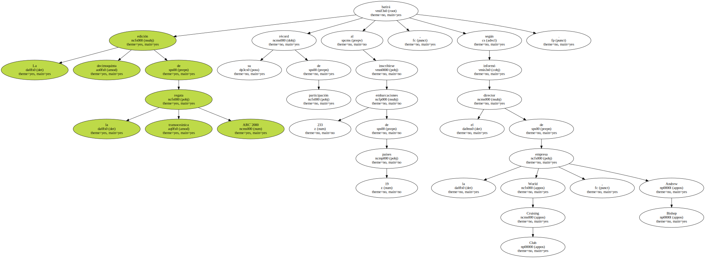
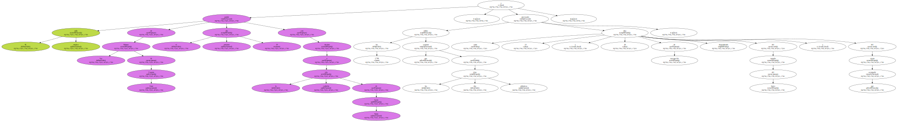
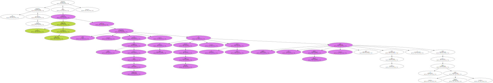
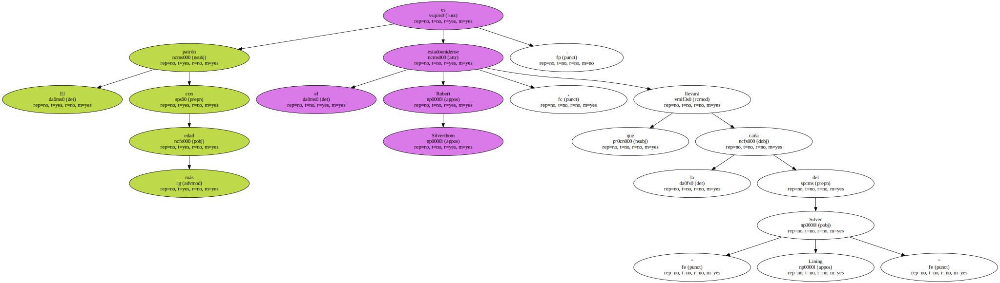
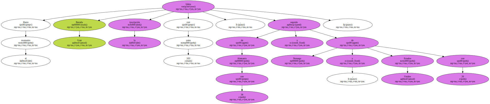
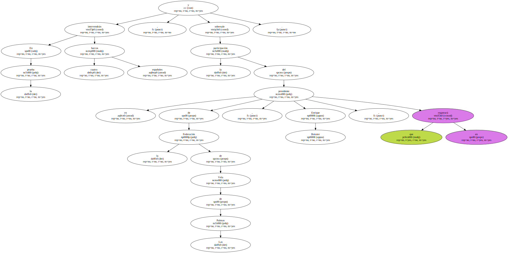
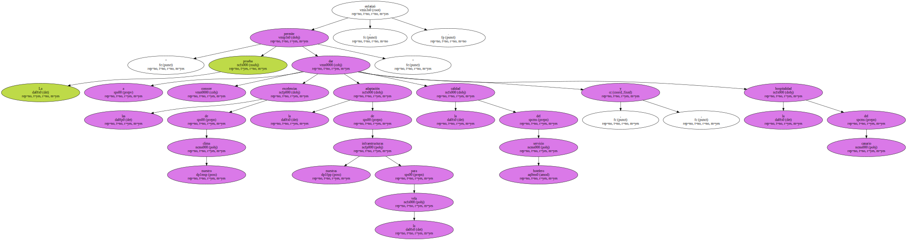
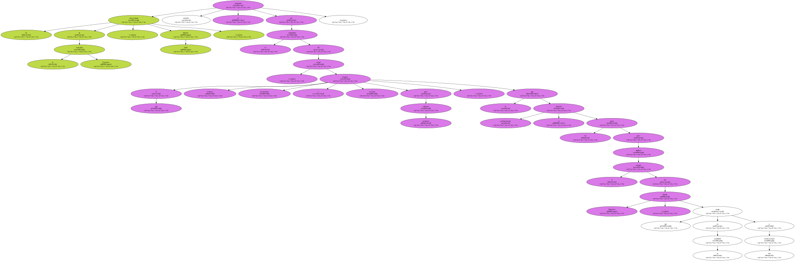

La decimoquinta edición de la regata transoceánica ARC`2000 batirá su récord de participación al inscribirse 233 embarcaciones de 19 países , según informó el director de la empresa World Cruising Club , Andrew Bishop.
El rally náutico partirá de Las Palmas de Gran Canaria el próximo día 19 con destino a la isla caribeña de Santa Lucía , y las 2.700 millas que separan a las dos islas atlánticas precisarán entre 13 y 26 días de navegación , dependiendo del tamaño del barco y del viento que acompañe.
Los promotores del evento informaron que la tripulación del ARC`2000 asciende a 1.200 participantes , con una media de 4,5 por embarcación , 23 de ellos menores de dieciséis años , siendo la más joven la niña Jessica Blatter , que tiene un año y viaja en el barco inglés " Tatopani ".
El patrón con más edad es el estadounidense Robert Silverthom , que llevará la caña del " Silver Lining ".
Hasta el momento Gran Bretaña lidera la inscripción con 103 yates , seguido de Alemania con 38 y de Noruega y Estados Unidos , con 20.
En la prueba intervendrán cuatro barcos españoles , y sobresale la participación del ex presidente de la Federación de Vela de Las Palmas , Enrique Boissier , que regateará en el " Canarias ".
La presidenta del Patronato de Turismo de Gran Canaria , María Concepción de Armas , mostró su satisfacción por la celebración del ARC`2000 porque tiene " un gran significado e importancia para la promoción de la isla " , y recordó que es " la mayor regata transoceánica del mundo ".

" La prueba permite dar a conocer las excelencias de nuestro clima , la adaptación de nuestras infraestructuras para la vela , la calidad del servicio hotelero y la hospitalidad del canario " , enfatizó.
El representante de la Autoridad Portuaria , Manuel Vidal , también se congratuló por la continuidad del evento , al que aseguró mejores prestaciones y servicios para próximas ediciones , ya que próximamente se iniciarán las obras para duplicar el atraque del Muelle Deportivo , que en la actualidad acoge a mil embarcaciones.
